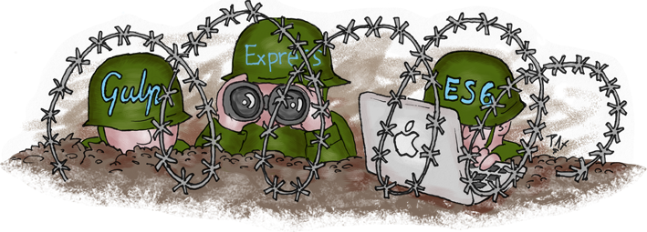

Node.js and ES6 Instead of Java – A War Story
by Patrick Hund
Part II: The Joy and Pain of Test Driven Development
We created a Node.js web app from scratch within 9 weeks that now serves 10.81 million visitors each month*. We used the latest and greatest incarnation of JavaScript – ECMAScript 2015, a.k.a. ES6 – for the backend and frontend alike. We spent late nights coding in gleeful frenzy, stepped into pitfalls, moaned about WTFs, scaled the dizzy heights of asynchronicity. This is the second part of our story.
* AGOF Digital Facts 2015-06
If you missed part I, read up on it here on the eBay Technology Blog Europe.
What Joy? What Pain?
Hi, I'm Patrick, software engineer. My team and I work for mobile.de, which is Germany's biggest online marketplace for cars and other vehicles.
In the second part of my series, I'll focus on automated tests for the backend.
When I started with the backend code for our new application, working with Node.js and the Express framework was still mostly terra incognita for me. I had written a couple of Grunt tasks and an import script to fetch data from an API, but never a fully fledged webapp, at least not in JavaScript.
I had written web apps in Java back in the days before I moved from backend to frontend. Building on that experience and looking at the mess the old mobile.de home page web app had become over the years, one thing was crystal clear:
You cannot write maintainable code without proper unit test coverage.